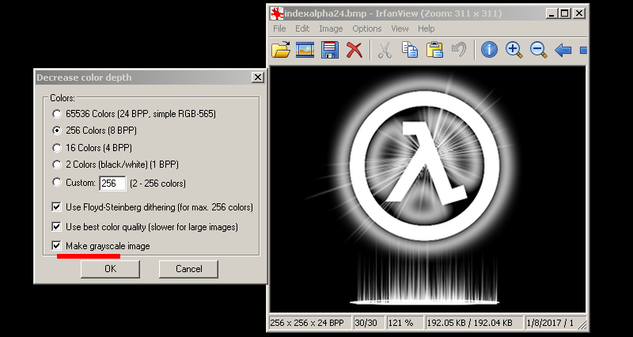

A lesser used sprite type but quite handy in certain situations; the IndexAlpha looks just like any alpha channel but instead of masking off an image it is masking a single solid color. Unlike additive, this sprite is useful for solid opaque darker colors in any lighting situations.
1) Begin by creating a new document with a black fill. Only using white, paint your image. Scale the image to a GoldSrc friendly image size which is a divisible by 16 number. In this case I used 256X256.
When finished convert the texture by going to mode> Index.. and set to custom. Under the table select greyscale. Now this format uses the bottom most right index (number 255) as the color for the whole image however, ive found its actually best to leave it as is and use a sprites FX color to do the tinting so we wont have to remake the sprite every time.
3) Save out the image as BMP. When prompted for 8bit hit okay.
3a) If you are using the IRFANVIEW conversion method in Part1,Step3a, its the same process only check the box of "greyscale" in the "decrease color depth window.

4a) Open up half-life texture tools and go to Tools>Create new sprite... then click "add new images". Add your newly created BMP.
4b)Go to the number 2 "Settings" tab and select "IndexAlpha" as your texture format. For sprite type I will use "parallelupright" since this design has a lightbeam base.
4c)Click tab 3 and save the sprite in your sprite directory just as before in Part1, Step4
5) Open up hammer or J.A.C.K and create an env_sprite. Set it up just like in previous steps with render mode to "texture". Now we "tint" the Indexalpha sprites color by using "FX Color". One quirk about coloring these types of sprites is that in order to get black we must have an RGB value of at least RGB[1 1 2] as pure black RGB[0 0 0] or even RGB[1 1 1] does not work.
6)Compile the map and observe. I also am showing off several color variants.
Id also like to point out an interesting use of indexalpha sprites compiled in oriented mode for wall details. These are used much like decals but with sprites you can have more control and the abilities/rendermodes of sprites. Use fine map grid to hover the sprite one gridpoint above a surface or else the sprite may "flicker" as it clips into the wall.
Here I am using a sprite as a detailed shadow:
Also using this effect for prints and smudges: